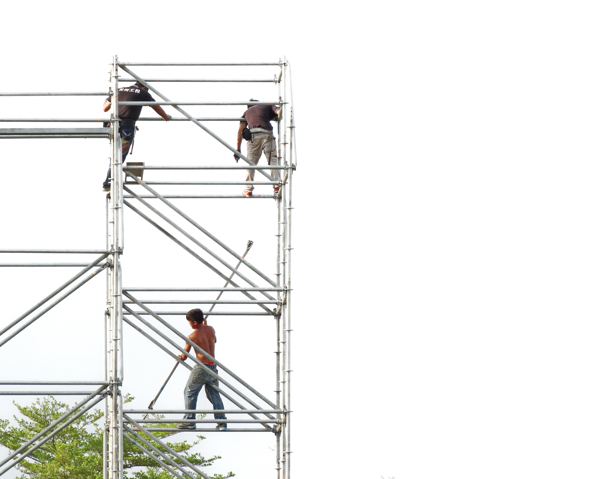

流程 A：VLM + 圖譜判讀主流程
新拍照片進入 Context-Guided Visual Language Model（VLM，脈絡引導式視覺語言模型）看圖判讀；上方三層圖譜只負責建立判釋錨點，人工查核後輸出標註後照片或表單填寫內容。
系統以法規/內規為核心，將違規類型、改善措施、表單欄位與歷史查驗紀錄串成可追溯圖譜，再由頂層 Construction Regulation Knowledge Graph（CRKG，營造法規知識圖譜）串接，完成 Safety Alert（安全警示）、改善建議與自動填表。
流程 A 呈現照片判讀主幹；流程 B 呈現 Graph 在三種更新/新增情境下的變化。點選左側項目時，右側圖會展開對應節點與關係。
新拍照片進入 Context-Guided Visual Language Model（VLM，脈絡引導式視覺語言模型）看圖判讀；上方三層圖譜只負責建立判釋錨點，人工查核後輸出標註後照片或表單填寫內容。
當法條/內規、表單或內容需要更新時，Graph 透過版本邊保留資料可追溯性；新增情境則依層級關係建立跨層或同層勾稽。
整體主幹是一個三層法規脈絡圖：第一層是法規/內規，第二層是表單，第三層是歷史資料；這整個圖譜從上方連到 Visual Language Model（VLM，視覺語言模型），作為判斷錨點。主流程則是新拍照片進入 VLM，再輸出標註照片或新表單內容。
除了照片判讀主流程，系統也需要維護法規/內規、表單與歷史資料之間的版本關係。更新時保留舊資料可追溯；新增時由 Graph 協助產生表單或內規建議。
保留舊版法規、舊表單與舊查驗資料，新增版本映射關係，讓同一類查核結果可跨版本比較、追溯與轉換。
當第一層新增規範但尚未有表單欄位時，系統提出查核欄位、填寫規則或公司內規補充建議，交由人工審核後納入 Graph。
若只是表單新增，Graph 需記錄欄位來源、適用情境與既有資料對應，避免新欄位變成無法追溯的孤立資料。
表格保留完整模組說明；上方 Graph 示意圖只呈現各模組在流程中的位置與主要輸出。
| 模組 | 主要職責 | 輸入 | 輸出 |
|---|---|---|---|
| Input Layer | 接收照片、工程元資料與任務設定。 | 照片、工地名稱、工項、日期、施工階段。 | Photo Package（照片資料包）。 |
| Context Retriever 脈絡檢索器 |
從法規/內規出發，經由表單欄位連到歷史資料，建立 VLM 判釋錨點。 | Photo Package（照片資料包）、工程元資料、法規/表單/歷史資料圖譜。 | Attention Anchors（注意錨點）、Context Checklist（脈絡查核清單）。 |
| Context-Guided VLM 脈絡引導式視覺語言判讀 |
依注意錨點做全圖判讀，並由 VLM grounding 產生疑似違規區域標記。 | Photo Package（照片資料包）、Attention Anchors（注意錨點）。 | Observation List（結構化觀察清單）、Photo Annotations（照片標記資料）。 |
| Rule Evaluation + 人工查核 | 依圖譜規則整理疑似違規、改善建議與需人工確認的查核項目。 | Observation List（結構化觀察清單）、照片標記、法規/表單/歷史資料圖譜。 | Violation Decisions（違規判定清單）、人工查核狀態。 |
| Output Generator 輸出產生器 |
產生安全報告、標記後照片、改善建議與表單填寫內容。 | Violation Decisions（違規判定清單）、Form Field Layer（表單欄位層）。 | PDF / JSON / 標註照片 / 已填寫表單。 |
每個違規判定都應能回指到照片上的證據範圍。照片標記由 Visual Language Model grounding（視覺語言模型定位）依注意錨點產生。

BOX-001、BOX-003 作為疑似個人防護具證據。BOX-002 供高處作業規則判定。POLY-001 檢查踏板與臨邊風險。bbox（bounding box，矩形框）：人員、安全帽、反光背心、機具。polygon（多邊形區域）：開口、臨邊、施工架平台、危險區域。label：疑似違規類型、標註範圍與人工查核狀態。link：標記範圍連到 Observation（OBS，結構化觀察）與 Violation Decision（違規判定）。建議系統內部用 JSON 傳遞，使 Visual Language Model（VLM，視覺語言模型）觀察、法規判定與表單填寫可測試、可追蹤、可人工複核。
由法規/內規、表單與歷史資料產生，告訴 VLM 這張照片要優先看什麼。
ANCHOR-001
VLM 依錨點在照片上標出 bbox / polygon，作為可回看的影像證據。
anchor_id → ANCHOR-001
VLM 看全局後整理出的判讀資料；描述看見什麼，不直接作最終違規結論。
linked_annotations → BOX-001, BOX-003
把 OBS、照片標記與法規/表單依據串起來，形成疑似違規、改善與填表內容。
source_observations → OBS-001
{
"id": "ANCHOR-001",
"photo_id": "IMG-20260528-001",
"graph_path": ["法規/內規", "表單", "歷史資料"],
"source_nodes": ["REG-WORK-HEIGHT-001", "FORM-PPE-F03", "HIS-2025-PPE"],
"work_item": "施工架作業",
"focus": "高處作業人員是否具備個人防護具與防墜措施",
"checklist_fields": ["安全帽", "安全帶", "護欄", "踏板完整性"],
"historical_record_refs": ["HIS-2025-0412", "HIS-2025-1020"],
"prompt_hint": "請優先檢查施工架平台、臨邊與作業人員頭部/腰部防護。"
}{
"id": "BOX-001",
"photo_id": "IMG-20260528-001",
"anchor_id": "ANCHOR-001",
"geometry_type": "bbox",
"coordinates": {
"x": 0.62,
"y": 0.18,
"width": 0.16,
"height": 0.28
},
"object_type": "person",
"violation_type_hint": "疑似未配戴安全帽",
"review_status": "待人工查核",
"visual_style": {
"label": "疑似未戴安全帽",
"color": "red"
}
}{
"id": "OBS-001",
"photo_id": "IMG-20260528-001",
"anchor_id": "ANCHOR-001",
"observation_type": "vlm_scene_interpretation",
"description": "施工架上有作業人員疑似未配戴安全帽",
"location": "影像上方與下方施工架作業區",
"linked_annotations": ["BOX-001", "BOX-003"],
"category_hint": ["PPE", "高處作業", "施工架"],
"visual_evidence": ["人員頭部未見安全帽", "人員位於施工架作業區"],
"decision_scope": "僅為視覺觀察，非最終違規結論",
"review_status": "待人工查核",
"review_note": "需由職安人員確認是否確實未配戴安全帽"
}{
"id": "VIOLATION-001",
"source_observations": ["OBS-001"],
"evidence_annotations": ["BOX-001", "BOX-003"],
"status": "疑似不符合",
"severity": "B",
"matched_rules": ["REG-HEIGHT-PPE-001"],
"rule_basis": ["法規/內規", "表單: 個人防護具.安全帽.F03", "歷史資料: HIS-2025-PPE"],
"improvements": ["補拍近景確認安全帽"],
"form_bindings": [
{
"form": "工地安全查核表",
"field": "個人防護具.安全帽.F03",
"value": "疑似未配戴安全帽，需人工複核"
}
],
"requires_human_review": true
}